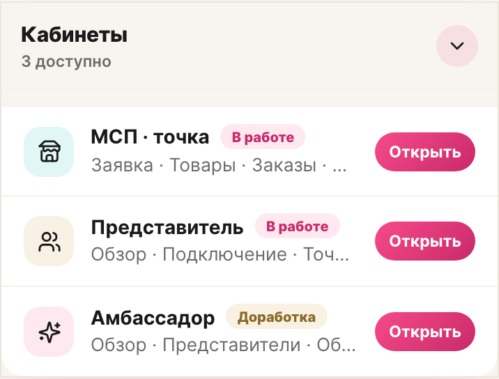
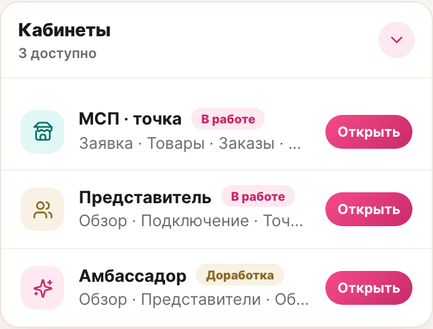

LOVII · lovii-app · профиль
На стенде шапка блока лежала на фоне страницы вместо белой подложки, а белым был только список. Причина — селектор, гасивший подложку и скругление у самой карточки-коллапса. Правка — в одну строку CSS.
Блок «Кабинеты» выбивался из ряда карточек профиля: заголовок «Кабинеты» с подписью «N доступно» и шевроном сидел прямо на фоне страницы, а белой была только группа строк под разделителем — как отдельная плашка, а не часть карточки.
Замер на светлой теме, 390×844, dsf 2:
| Область | Значение | Ожидалось |
|---|---|---|
| Шапка «Кабинеты» | rgb(248,245,240) | rgb(255,255,255) |
| Список внутри | rgb(255,255,255) | rgb(255,255,255) |
| Радиус карточки | 0px | 16px |
Под списком навигации .profile__nav висело правило, которое гасило у дочерних секций общую «плиточную» подложку. Селектор целился в старую разметку section.cabinets, а после того как блок обернули в общий сворачиваемый паттерн (ProfileCollapse), он стал попадать в саму карточку.
По специфичности это правило оказалось сильнее правила карточки и затирало ровно два свойства — фон и радиус:
/* ProfileModule.vue — было */ .profile__nav > section { background: var(--background-normal-surface); border-radius: 16px; padding: 8px 16px; … } .profile__nav > section.collapse { padding: 0; background: none; border-radius: 0; display: block; } /* ProfileCollapse.vue — правило карточки (слабее по специфичности) */ .collapse { background: var(--lv-card); border: 1px solid var(--lv-line); border-radius: var(--lv-r-lg); box-shadow: var(--lv-shadow-soft); … }
Отсюда и странный вид: рамка, тень и отступы карточки оставались, а подложка и скругление — пропадали. Поэтому блок выглядел «почти карточкой», но не совпадал с «Счётом LOVII PAY» и «Историей операций».


Карточку-коллапс исключили из правила «плиточной» секции через :not(.collapse), отдельное правило-обнуление удалили. Теперь блок берёт фон, радиус и рамку из общего паттерна карточки. Поведение остальных строк навигации не менялось.
/* ProfileModule.vue — стало */ .profile__nav > section:not(.collapse) { width: 100%; background: var(--background-normal-surface); border-radius: 16px; padding: 8px 16px; display: grid; grid-template-columns: 1fr; } /* правило «> section.collapse { … }» удалено */
| Шаг | Результат |
|---|---|
| Пересборка прод-сборки | vite build — ok; в бандле :not(.collapse) |
| Фон шапки на стенде | rgb(255,255,255) — белая карточка |
| Скругление верхних углов | ≈16px (замер по квадранту угла) |
| Юнит-тесты | 560 / 560 (80 файлов) |
| Типы | vue-tsc — без ошибок |
Правка лежит в рабочей копии поверх незакоммиченной работы по профилю и в удалённую ветку не отправлялась.